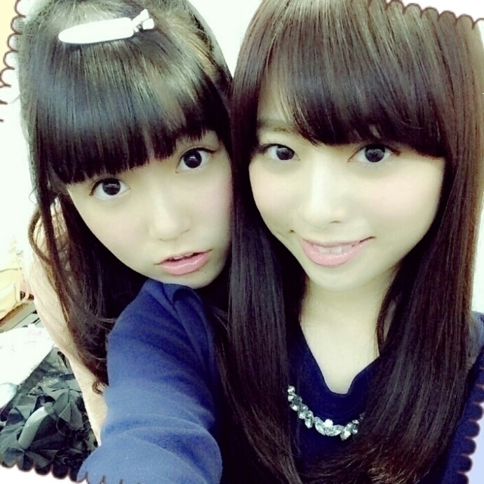

| 2014/10 17 Fri | ひめたん-OoO-その489 |

ひめツイン ⌒(｡･.･｡)⌒
メルヘンなツインでしょーって
前回の日記に書いたら
「ひめツイン」って命名してくれた～
高めの後ろめで結んで内巻き♡
NOGIBINGO!3
#2告知してなかった～(>_<)
観てくれたかな？
玲奈さんNOGIBINGO!初登場！
玲奈さんは「ひめた～ん♡」って
いつもかわいがっていただいて
本当に尊敬する先輩です。
クイズはちょっと難しかったけどね
水がこぼれるなんてわかんないよ(笑)
未央ちゃん18歳おめでとう\( ˆoˆ )/
私たち同い年～♡
ひめは未央ちゃんままも大好き！

アンダーライブはラスト2公演\❁/
昨日はせっちゃん来てくれました
せっちゃん頑張ってる！尊敬！
昨日やっと全員揃って
ステージに立つことが出来ました
ひとりでも欠けちゃだめね(´；ω；｀)
毎日いろんなことがありましたが
こうして25名全員で
出演できることができて幸せです
10thアンダー・研究生の集大成
寧々の最後のステージ
最後までどうか見届けてください。

っとその前に明日は個握ね～
行くよーってみなさん
楽しみにしてます♡
ハロウィンの季節なので
ひめたんはハロウィン仕様の
お洋服を着るよ(ノ)･ω･(ヾ)
お留守番ちーむのみんなは
日記で報告するから待っててね～
最後に告知というか報告というか
週プレさんに取材していただきました☆
発売日とかはまた追って
お知らせさせてくださいね～
最近雑誌にも登場する機会が増えて
本当にありがたいこと／(^o^)＼

 万理華さんも小百合さんもひめたんも
万理華さんも小百合さんもひめたんも
同じくらい大好きなんですが、ライブで
その3人に推してます！と伝えるには、
どうすれば良いですか？
そうだね、例えば
万理華コールをしながら
小百合タオルを首にかけて
ひめたんカラーのサイリウムを降るとか
そーゆーこと？(笑)
今家で飼ってる今年で10歳になる
トイプードルのあだ名を
ひめたんに考えて欲しいなー
今までのあだ名は？
ひめたんがあだ名を新たに命名したら
そ、そのわんちゃんの10年間は
どうなるの(´；ω；｀)うぅ......
怒られた時にどうやって
立ち直ることができますか？
基本的にあんまり引きずらないタイプなので
寝たらスッキリする私は
幸せガールなのかしら\( ˆoˆ )/＊
ひめたんが気になるー！
今からでもひめたん推しになっても
いいですか！？
もちろんもちろん♡
嬉しい～ありがとー\( ˆoˆ )/
 もしかしてだけど〜
もしかしてだけど〜
もしかしてだけど〜
俺ってひめたん大好きなんじゃないのぉ〜
そーゆーことだろぉ～♪
ひめたんの日記の
コメント欄下２ケタに46を踏んだ方へ
手書きでコメ返するコーナー
＼ ひめたん46 ／

いつもたくさんのコメント
ありがとうございます！
前から応援してくださっているひとには
ひめたんコメント増えたね～って
言っていたたけることが多くて
もうにやにやしちゃう( ´ ▽ ` )
でも、なんていうか
ひとつひとつ大切に読む習慣は
ずっと昔のままだからね♡♡
最近ミルクティーの摂取率が高い。
ままの娘なんだな～
実はこの前のアンダーライブ
ままと妹が観に来てくれたんだけどね
その時にメンバーのみんなから
「ひめたん ままとそっくり！」
って言われた(゜ω゜)ぱ
芯のしっかりしてるひと
ステキだなって思うんだよね
それでは横浜・六本木で会いましょう！
(＊´・ω・＊)
コメント(760)
2014/10/17 23:42